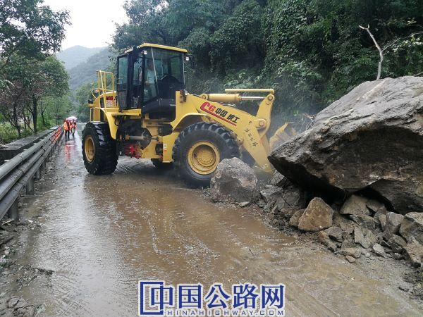

微官网
微官网
2019-09-16 中国高速公路网—21世纪公路网 作者：特约记者徐立生
9月7日至9月15日，持续强降雨袭击了汉中大地，导致全市境内的国省干线公路多处出现塌方和泥石流，道路交通中断14次，给人民群众的安全出行带来了不便。
本轮强降雨造成干线公路塌方、泥石流、滑坡48924立方米/253处，挡墙损坏636立方米/5处，涵洞局毁1道，冲毁路基661立方米/0.17公里，冲毁水沟5200米等，造成经济损失1210万元。
水毁发生后，汉中公路迅速启动应急抢险预案，对发生的水毁路段做到随阻随抢，随抢随通。此次抢险，汉中公路局投入抢险人员2760人次，挖掘机、装载机330余台班，大型运输车辆450余台班，购买砂袋，铅丝笼，示警锥、警示筒、爆闪灯、标志牌、片石、碎石、混凝土管涵等抢险物资，投入抢险费用462万元。特别是9月13日上午9时，留坝境内G244K1036+800处塌方导致交通中断，为了快速清理塌方抢通便道汉台和留坝段从两个方向同时进行清理，仅用两个小时抢通便道，切实保障了道路安全通畅。
据统计，自今年7月份以来，汉中持续降雨多达3个月之久，截止9月15日累计共造成国省干线公路塌方、泥石流、滑坡12万立方/882处，冲毁构造物27537立方米/85处、沥青混凝土和水泥混凝土面层48520平方米/42.21公里、桥梁局部损坏191米/11处、水沟损坏6390米、涵洞损坏11道，房屋429平方米/3幢等，累计经济损失4906万元。为了抢通道路累计投入抢修人员11960多人次，挖掘机、装载机1130余台班，大型运输车辆2050余台班，购买砂袋，铅丝笼，示警锥、警示筒、爆闪灯、标志牌、片石、碎石、混凝土管涵等抢险物资，共计投入抢险费用1682余万元，目前抢险及排查工作还在进行中。
截止9月16日，汉中公路局辖养的国省干线公路均保持畅通无阻。
